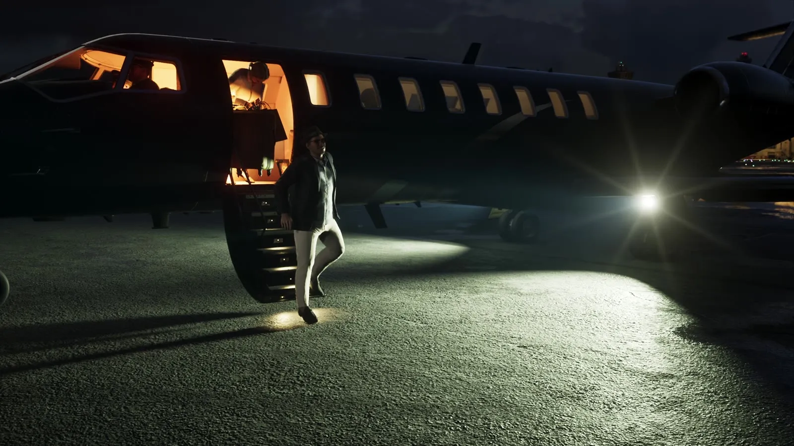
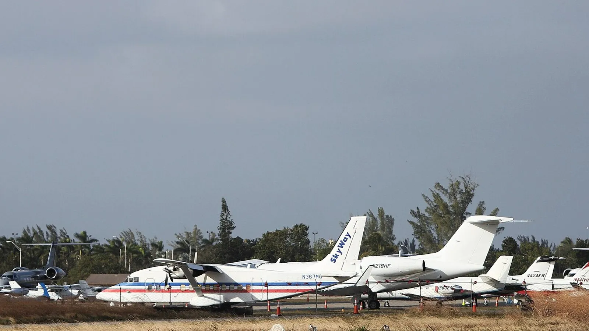
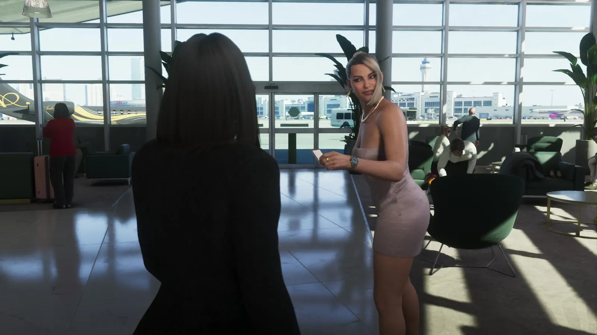

Частный терминал с джетами в GTA 6 и аэропорт Опа-Лока
Опубликовано:
Частный терминал и бизнес-джет у трапа — обычная картина деловой авиации Майами. Сам терминал в игре вымышленный, какой реальный аэропорт взят за образец, Rockstar не говорила.


- В «Расширенном показе» GTA 6 есть зал ожидания с панорамными окнами, за стеклом — самолёты.
- Ночью у бизнес-джета открыт освещённый трап, гостей встречают прямо на лётном поле и увозят на внедорожнике.
- В Майами для деловой авиации есть отдельный аэропорт — Майами-Опа-Лока (OPF), запасной для международного аэропорта Майами.
- В Опа-Лока работают три частных терминала (FBO) — от маленьких одномоторных самолётов до больших корпоративных джетов.
- Аэропорт основал Гленн Кёртисс в 1927 году; в 1967-м он был самым загруженным в мире.
Что в игре
Около 19:08 «Расширенного показа» камера показывает светлый зал ожидания: панорамные окна, кресла, растения в кадках. За стеклом — лётное поле и самолёты, у окна пассажирка с чемоданом. Блондинка в жемчужном ожерелье что-то рассказывает, рядом брюнетка в чёрном и мужчина в тёмном пиджаке, официантка выносит напитки на подносе.
Затем — ночь. У тёмного бизнес-джета открыт освещённый трап. Мужчину в шляпе встречают объятиями прямо на лётном поле, а потом вся компания уезжает на внедорожнике. Ни регистрации, ни очередей — машина подъезжает прямо к самолёту.

Что в реальности
В Майами частные и корпоративные самолёты обслуживает не только международный аэропорт. По данным Управления авиации округа Майами-Дейд, аэропорт Майами-Опа-Лока (код OPF) — запасной аэропорт для международного аэропорта Майами. Он работает на авиацию общего назначения и деловую авиацию, принимает лёгкие грузовые рейсы на Карибы и крупное техобслуживание самолётов. Посадочных сборов здесь нет.
Аэропорт занимает 1810 акров, у него три полосы, самая длинная — 8002 фута (около 2,4 км). Пассажиров частных самолётов обслуживают три частных терминала — FBO (fixed-base operator): Atlantic Aviation, Fontainebleau Aviation и Signature Flight Support — от маленьких одномоторных машин до больших корпоративных джетов. Таможня США работает здесь ежедневно с 9:00 до полуночи. Вместе с запасным полем Майами-Опа-Лока-Вест аэропорт принимает больше 175 000 взлётов и посадок в год.
История у аэропорта длинная: в 1927 году его основал пионер авиации Гленн Кёртисс как Florida Aviation Camp, потом здесь была авиабаза ВМС, а в 1967 году Опа-Лока был самым загруженным аэропортом в мире — больше 650 000 взлётов и посадок. Нынешнее название — Miami-Opa locka Executive Airport — появилось в 2014 году.
В игре гостей встречают прямо у трапа и сразу увозят на машине. В частных терминалах так и устроено: FBO обслуживает пассажиров отдельно от обычных рейсов, а в Опа-Лока на месте есть и таможня.
Совпадает и отличается
| Майами | GTA 6 | |
|---|---|---|
| Отдельный терминал для частных самолётов | FBO: Atlantic Aviation, Fontainebleau Aviation, Signature Flight Support в Опа-Лока | 🟢 Зал ожидания с окнами на лётное поле |
| Бизнес-джеты | От одномоторных самолётов до больших корпоративных джетов | 🟢 Бизнес-джет с трапом ночью |
| Конкретный аэропорт | Майами-Опа-Лока (OPF), основан в 1927 году | 🔵 Вымышленный, название в «Расширенном показе» не показано |
Источники: Rockstar Games — «Grand Theft Auto VI: An Extended Look» (19:08–20:13); Miami-Dade Aviation Department — Miami-Opa locka Executive Airport (miami-airport.com); Wikimedia Commons — фото James McCloskey (CC BY-SA 2.0).
Реальные фото: Фото: James McCloskey from Pad 39 A, Land of the free Home of the Brave, CC BY-SA 2.0 · Wikimedia Commons. Кадры игры: Rockstar Games.
Каждый день — одно сравнение: кадр игры рядом с реальным фото. Подписывайтесь:
YouTubeInstagramTikTok
 vs
vs
 vs
vs